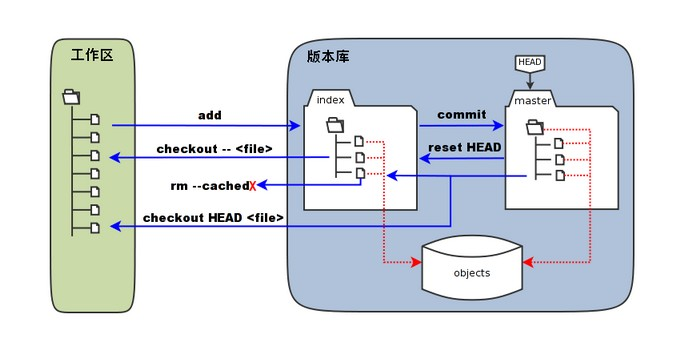

Git使用中的一些问题
Jake G January 22, 2018 [软件] #Git1-配置问题
全局配置
$ git config --list 查看当前用户信息
$ git config --global user.name "username" 配置用户名
$ git config --global user.email emailname@example.com 配置邮箱
项目配置(进入项目目录)
$ cat .git/config 项目配置信息
$ git config user.name "username" 配置用户名
$ git config user.email emailname@example.com 配置邮箱
全局的配置就是加上---global
项目未设置的配置默认使用全局配置
2-密钥问题
$ cd ~/.ssh 查看是否存在密钥
$ ssh-keygen -t rsa -C "emailname@example.com" 生成密钥
$ ssh -T git@github.com 测试是否配置成功
生成密钥过程中回车三次，是密码为空，不然每次push都要输入密码
生成密钥后主要有两个文件
~/.ssh/id_rsa
私钥进行处理后的一些内容
~/.ssh/id_rsa.pub
公钥进行处理后的内容，提交到服务器(github或coding)的内容
~/.ssh/known_hosts
这个文件可能会有，是ssh对服务器的一些记录
3-工作区、暂存区和版本库

git add：暂存区的目录树被更新，同时工作区修改（或新增）的文件内容被写入到对象库中的一个新的对象中，而该对象的ID被记录在暂存区的文件索引中。
git commit：暂存区的目录树写到版本库（对象库）中，master
分支会做相应的更新。即 master 指向的目录树就是提交时暂存区的目录树。
git reset HEAD ：暂存区的目录树会被重写，被 master
分支指向的目录树所替换，但是工作区不受影响。
git rm --cached <file>：直接从暂存区删除文件，工作区则不做出改变。
git checkout . 或者
git checkout -- <file>：用暂存区全部或指定的文件替换工作区的文件。这个操作很危险，会清除工作区中未添加到暂存区的改动。
git checkout HEAD .或者 git checkout HEAD <file>：用 HEAD 指向的
master
分支中的全部或者部分文件替换暂存区和以及工作区中的文件。这个命令也是极具危险性的，因为不但会清除工作区中未提交的改动，也会清除暂存区中未提交的改动。
参考资料
1.https://www.cnblogs.com/hustskyking/p/problems-in-git-when-ssh.html